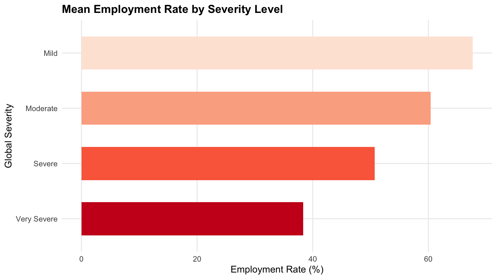
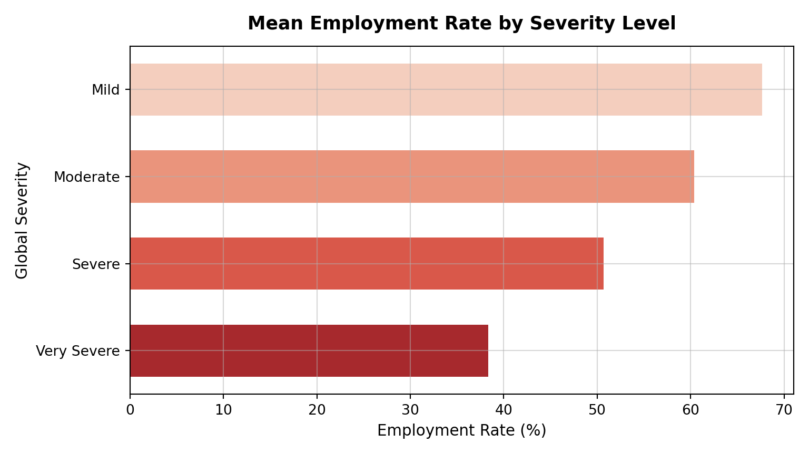
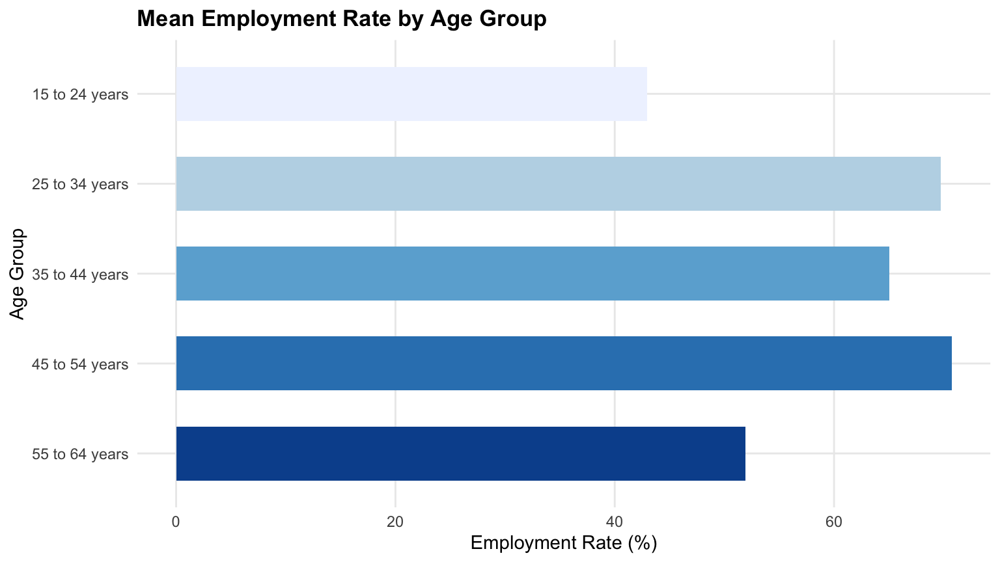
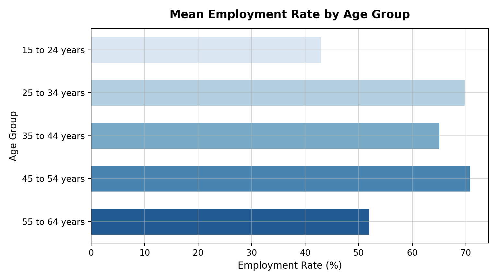
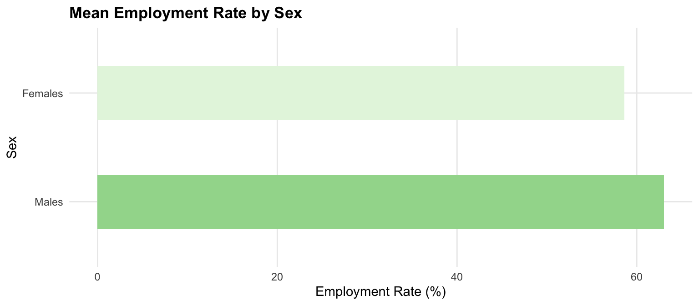
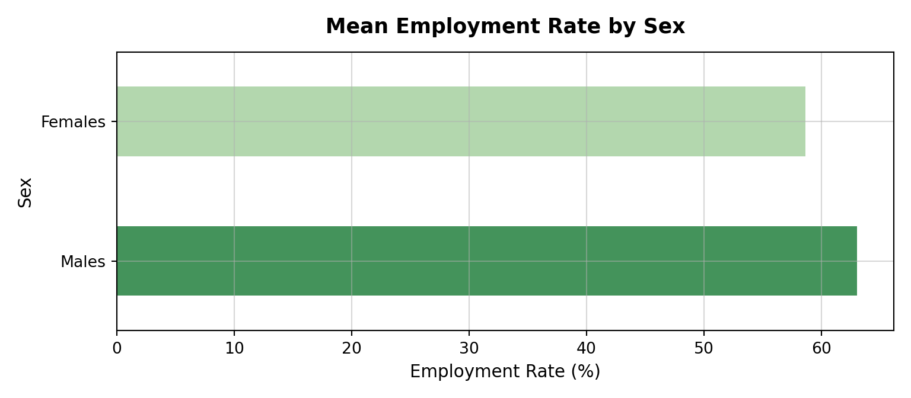
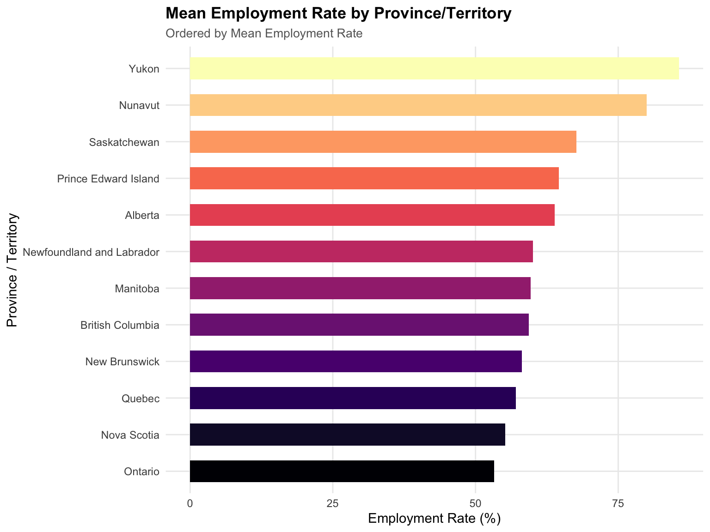
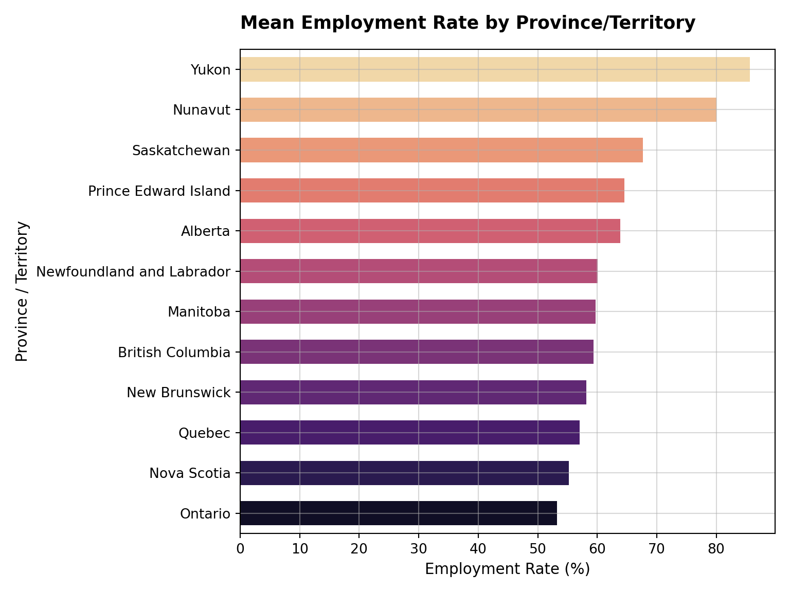

# Data
library(diversedata) # Diverse Data Hub datasets
# Core libraries
library(tidyverse)
library(knitr)
# Statistical Modeling
library(broom)Labour Force Status for Adults with Disabilities
About the Data
This dataset investigates the labour force status for adults with disabilities in Canada, categorized by disability type, global severity, age, sex, and geography. Compiled by Statistics Canada, this data provides a macro-level view of how intersecting demographic factors impact employment outcomes and labour market inclusion for individuals living with disabilities.
Historically, persons with disabilities in Canada face a substantial employment gap compared to the general population. Research from Statistics Canada indicates that this gap is not uniform; it widens significantly as the severity of the disability increases and varies widely across different types of impairments. In fact, nearly three in five persons with disabilities or long-term conditions experience a labour market-related barrier. These structural hurdles span the entire employment lifecycle: from the hiring process to on-the-job challenges like navigating physical environments, inaccessible transportation, and unmet needs for modified work hours. While the recent rise in remote work has helped improve accommodation rates, these barriers continue to disproportionately affect specific demographics, particularly when intersected with gender, age, and regional economic differences, as detailed in recent findings on workplace accommodations and flexible scheduling and accessibility barriers in employment.
These statistics are important for evaluating the efficacy of provincial and federal financial support systems (such as the Canada Disability Benefit and provincial disability assistance programs) and highlight the systemic barriers that specific demographic groups face when seeking employment. This dataset enables researchers to statistically quantify these disparities and advocate for targeted vocational interventions.
Download
Metadata
CSV Name
labourforcewithdisabilities.csv
Dataset Characteristics
Multivariate, Aggregated
Subject Area
Equity, Disability, Labour Economics
Associated Tasks
Regression, Comparative Analysis
Feature Type
Categorical, Numeric
Instances
4,343 records
Features
7
Has Missing Values?
No
Variables
| Variable Name | Role | Type | Description | Missing Values |
|---|---|---|---|---|
geography |
Feature | Categorical | Province or territory location, e.g., “Ontario”, “British Columbia” | No |
sex |
Feature | Categorical | Sex of the respondents: “Males” or “Females” | No |
age_group |
Feature | Categorical | Age bracket, e.g., “15 to 24 years”, “25 to 34 years” | No |
disability_type |
Feature | Categorical | Specific impairment type or “All disability types” | No |
global_severity |
Feature | Categorical | Severity level: “Mild”, “Moderate”, “Severe”, “Very Severe” | No |
labour_force_status |
Feature | Categorical | Status metric, e.g., “Employment Rate”, “Total labour force” | No |
value |
Feature | Numeric | The corresponding percentage rate or raw population headcount | No |
Key Features of the Dataset
Each row of this dataset represents an aggregated demographic group of adults with disabilities and reports their labour force status metrics:
- Location (
geography) – The Canadian province or territory of the respondents. - Demographic Information (
sex,age_group) – Information on the sex and age bracket of the group. - Disability Profile (
disability_type,global_severity) – The specific type of impairment and the overall severity level of the disability (ranging from Mild to Very Severe). - Labour Force Metric (
labour_force_status) – The specific employment metric being reported, such as the employment rate, unemployment rate, or total labour force population count. - Reported Value (
value) – The numerical percentage or population headcount corresponding to the labour force status.
Purpose and Use Cases
This dataset supports the analysis of:
- Employment Equity & Barriers: Examining how the severity and specific classification of a disability impact an individual’s likelihood of securing employment.
- Intersectionality in the Labour Market: Evaluating the combined effects of age, sex, and varying levels of disability severity on workforce participation.
- Geographic Disparities: Comparing employment outcomes for individuals with disabilities across different Canadian provinces and territories to identify regional inequalities.
- Predictive Modeling: Building fractional regression baselines to estimate expected employment probabilities based on a combination of medical and demographic factors.
- Institutional & Policy Insights: Informing the distribution of federal and provincial social assistance (such as the Canada Disability Benefit), adjusting earnings exemption limits, and designing targeted vocational rehabilitation programs.
Case Study
Objective
Equitable employment is a cornerstone of financial independence and social inclusion for adults living with disabilities. In Canada, federal and provincial governments provide essential financial assistance, such as the Canada Disability Benefit (CDB) and provincial support programs, to help bridge the income gap. However, the reliance on these support systems and the ability to find sustainable employment are heavily influenced by a complex intersection of demographic factors.
To better understand the structural barriers within the Canadian labour market, this case study leverages Statistics Canada data to evaluate employment outcomes. We focus on several key questions:
- How does the global severity of a disability impact the likelihood of employment?
- Are there significant disparities in employment rates across different age groups and sexes?
- To what extent does geographical location (province or territory) affect labour force inclusion?
By conducting exploratory data analysis and fitting a regression model, we aim to statistically quantify the primary drivers of employment for individuals with disabilities. This analysis provides an educational framework for understanding how data can inform public policy, optimize vocational rehabilitation resources, and highlight regional or demographic gaps in the current society.
Analysis
Loading Libraries
import diversedata as dd
import pandas as pd
import numpy as np
from IPython.display import Markdown
import statsmodels.api as sm
import statsmodels.formula.api as smf
import matplotlib.pyplot as plt
import seaborn as sns1. Data Cleaning & Processing
Note: When working with aggregated government data, metrics like “Employment Rate” are often pre-calculated percentages. To use these in a logistical or fractional regression model, we must convert them into a 0-1 proportion.
# Reading data
labour_force <- labourforcewithdisabilities
# Filter for the target disability category to avoid double-counting
df_all_disabilities <- labour_force |>
filter(disability_type == 'All disability types')
# Separate the employment rates from the population counts
df_rates <- df_all_disabilities |>
filter(labour_force_status == 'Employment Rate') |>
rename(employment_rate = value)
df_pop <- df_all_disabilities |>
filter(labour_force_status == 'Total labour force') |>
rename(population_weight = value)
# Merge to align rates with their respective population weights
merge_cols <- c('geography', 'sex', 'age_group', 'global_severity')
labour_force_clean <- df_rates |>
select(all_of(merge_cols), employment_rate) |>
inner_join(df_pop |> select(all_of(merge_cols), population_weight), by = merge_cols) |>
drop_na(employment_rate, population_weight) |>
# Convert rate to a 0-1 proportion for the Fractional Logit model
mutate(employment_proportion = employment_rate / 100.0)
# Preview data
labour_force_clean |>
head() |>
kable()| geography | sex | age_group | global_severity | employment_rate | population_weight | employment_proportion |
|---|---|---|---|---|---|---|
| Newfoundland and Labrador | Males | 15 to 24 years | Mild | 23.8 | 650 | 0.238 |
| Newfoundland and Labrador | Males | 25 to 34 years | Mild | 69.2 | 1070 | 0.692 |
| Newfoundland and Labrador | Males | 35 to 44 years | Mild | 74.8 | 1260 | 0.748 |
| Newfoundland and Labrador | Males | 35 to 44 years | Moderate | 43.6 | 550 | 0.436 |
| Newfoundland and Labrador | Males | 45 to 54 years | Mild | 78.1 | 2800 | 0.781 |
| Newfoundland and Labrador | Males | 55 to 64 years | Mild | 62.9 | 1960 | 0.629 |
# Reading data
labour_force = dd.load_data("labourforcewithdisabilities")
# Filter for the target disability category to avoid double-counting
df_all_disabilities = labour_force[labour_force['disability_type'] == 'All disability types']
# Separate the employment rates from the population counts
df_rates = df_all_disabilities[df_all_disabilities['labour_force_status'] == 'Employment Rate'].copy()
df_pop = df_all_disabilities[df_all_disabilities['labour_force_status'] == 'Total labour force'].copy()
# Rename the 'value' columns before merging
df_rates = df_rates.rename(columns={'value': 'employment_rate'})
df_pop = df_pop.rename(columns={'value': 'population_weight'})
# Merge to align rates with their respective population weights
merge_cols = ['geography', 'sex', 'age_group', 'global_severity']
labour_force_clean = pd.merge(df_rates[merge_cols + ['employment_rate']],
df_pop[merge_cols + ['population_weight']],
on=merge_cols,
how='inner')
# Drop any rows with suppressed or missing data
labour_force_clean = labour_force_clean.dropna(subset=['employment_rate', 'population_weight'])
# Convert rate to a 0-1 proportion for the Fractional Logit model
labour_force_clean['employment_proportion'] = labour_force_clean['employment_rate'] / 100.0
Markdown(labour_force_clean.head().to_markdown())| geography | sex | age_group | global_severity | employment_rate | population_weight | employment_proportion | |
|---|---|---|---|---|---|---|---|
| 0 | Newfoundland and Labrador | Males | 15 to 24 years | Mild | 23.8 | 650 | 0.238 |
| 1 | Newfoundland and Labrador | Males | 25 to 34 years | Mild | 69.2 | 1070 | 0.692 |
| 2 | Newfoundland and Labrador | Males | 35 to 44 years | Mild | 74.8 | 1260 | 0.748 |
| 3 | Newfoundland and Labrador | Males | 35 to 44 years | Moderate | 43.6 | 550 | 0.436 |
| 4 | Newfoundland and Labrador | Males | 45 to 54 years | Mild | 78.1 | 2800 | 0.781 |
2. Exploratory Data Analysis
Before applying predictive modeling or inferential tests, visual exploration provides an intuitive baseline of how employment rates vary across individual demographic factors.
Employment Rate by Severity Level
This visualization evaluates the relationship between disability severity and employment outcomes. It aggregates reported employment rates across four global severity tiers: Mild, Moderate, Severe, and Very Severe.
sev_order <- c("Mild", "Moderate", "Severe", "Very Severe")
ggplot(labour_force_clean, aes(
x = employment_rate,
y = factor(global_severity, levels = rev(sev_order)), # rev() plots Mild at the top
fill = factor(global_severity, levels = sev_order) # Maps light-to-dark logically
)) +
stat_summary(fun = "mean", geom = "bar", width = 0.6) +
scale_fill_brewer(palette = "Reds") +
labs(
title = "Mean Employment Rate by Severity Level",
x = "Employment Rate (%)",
y = "Global Severity"
) +
theme_minimal(base_size = 11) +
theme(
legend.position = "none",
plot.title = element_text(face = "bold", size = 13),
panel.grid.minor = element_blank()
)
sev_order = ["Mild", "Moderate", "Severe", "Very Severe"]
plt.figure(figsize=(8, 4.5))
sns.barplot(
data=labour_force_clean,
x="employment_rate",
y="global_severity",
hue="global_severity",
order=sev_order,
hue_order=sev_order,
errorbar=None,
palette="Reds",
legend=False,
width=0.6,
)
plt.title("Mean Employment Rate by Severity Level", fontsize=13, fontweight="bold", pad=12)
plt.xlabel("Employment Rate (%)", fontsize=11)
plt.ylabel("Global Severity", fontsize=11)
plt.grid(True, alpha=0.5)
plt.tight_layout()
plt.show()
A clear negative trajectory emerges between impairment severity and labour market participation. Individuals classified with Mild disabilities experience employment rates approaching 70%, whereas the likelihood of holding a job declines sharply as severity transitions to Moderate, Severe, and Very Severe.
Employment Rate by Age Group
This plot examines labour force engagement across different stages of working life, from youth entering the workforce to older adults approaching retirement.
age_order <- c("15 to 24 years", "25 to 34 years", "35 to 44 years", "45 to 54 years", "55 to 64 years")
ggplot(labour_force_clean, aes(
x = employment_rate,
y = factor(age_group, levels = rev(age_order)),
fill = factor(age_group, levels = age_order)
)) +
stat_summary(fun = "mean", geom = "bar", width = 0.6) +
scale_fill_brewer(palette = "Blues") +
labs(
title = "Mean Employment Rate by Age Group",
x = "Employment Rate (%)",
y = "Age Group"
) +
theme_minimal(base_size = 11) +
theme(
legend.position = "none",
plot.title = element_text(face = "bold", size = 13),
panel.grid.minor = element_blank()
)
age_order = [
"15 to 24 years", "25 to 34 years",
"35 to 44 years", "45 to 54 years", "55 to 64 years"
]
plt.figure(figsize=(8, 4.5))
sns.barplot(
data=labour_force_clean,
x="employment_rate",
y="age_group",
hue="age_group",
order=age_order,
hue_order=age_order,
errorbar=None,
palette="Blues",
legend=False,
width=0.6,
)
plt.title("Mean Employment Rate by Age Group", fontsize=13, fontweight="bold", pad=12)
plt.xlabel("Employment Rate (%)", fontsize=11)
plt.ylabel("Age Group", fontsize=11)
plt.grid(True, alpha=0.5)
plt.tight_layout()
plt.show()
Employment rates follow a distinct bell curve across age categories. Working-age adults in the core brackets (25 to 54 years) maintain the highest average employment rates. Conversely, youth (15 to 24 years) and older adults (55 to 64 years) experience substantial penalties, reflecting transition barriers for new labour market entrants and early exits from the workforce near retirement age.
Employment Rate by Sex
This comparison breaks down average employment rates between men and women in the dataset to highlight sex-based participation gaps.
sex_order <- c("Females", "Males")
ggplot(labour_force_clean, aes(
x = employment_rate,
y = factor(sex, levels = rev(sex_order)),
fill = factor(sex, levels = sex_order)
)) +
stat_summary(fun = "mean", geom = "bar", width = 0.5) +
scale_fill_brewer(palette = "Greens") +
labs(
title = "Mean Employment Rate by Sex",
x = "Employment Rate (%)",
y = "Sex"
) +
theme_minimal(base_size = 11) +
theme(
legend.position = "none",
plot.title = element_text(face = "bold", size = 13),
panel.grid.minor = element_blank()
)
sex_order = ["Females", "Males"]
plt.figure(figsize=(8, 3.5))
sns.barplot(
data=labour_force_clean,
x="employment_rate",
y="sex",
hue="sex",
order=sex_order,
hue_order=sex_order,
errorbar=None,
palette="Greens",
legend=False,
width=0.5,
)
plt.title("Mean Employment Rate by Sex", fontsize=13, fontweight="bold", pad=12)
plt.xlabel("Employment Rate (%)", fontsize=11)
plt.ylabel("Sex", fontsize=11)
plt.grid(True, alpha=0.5)
plt.tight_layout()
plt.show()
Men display a marginally higher mean employment rate compared to women. While this gap is narrower than the disparities observed across age brackets or severity levels, it indicates that sex intersects with disability to shape workforce attachment.
Employment Rate by Province and Territory
This chart displays geographic variation in employment rates across Canadian provinces and territories, ordered from highest to lowest mean employment rate.
ggplot(labour_force_clean, aes(
x = employment_rate,
y = reorder(geography, employment_rate, FUN = mean),
fill = reorder(geography, employment_rate, FUN = mean)
)) +
stat_summary(fun = "mean", geom = "bar", width = 0.6) +
scale_fill_viridis_d(option = "magma") +
labs(
title = "Mean Employment Rate by Province/Territory",
subtitle = "Ordered by Mean Employment Rate",
x = "Employment Rate (%)",
y = "Province / Territory"
) +
theme_minimal(base_size = 11) +
theme(
legend.position = "none",
plot.title = element_text(face = "bold", size = 13),
plot.subtitle = element_text(color = "gray40", size = 10),
panel.grid.minor = element_blank()
)
# Calculate means and order ascending to match R's color scaling
geo_means = labour_force_clean.groupby("geography")["employment_rate"].mean().sort_values(ascending=True)
geo_order_asc = geo_means.index.tolist()
# Reverse for the y-axis so the highest value sits at the top of the plot
geo_order_desc = geo_order_asc[::-1]
plt.figure(figsize=(8, 6))
sns.barplot(
data=labour_force_clean,
x="employment_rate",
y="geography",
hue="geography",
order=geo_order_desc, # Plot highest at top
hue_order=geo_order_asc, # Map magma lowest-to-highest to match R
errorbar=None,
palette="magma",
legend=False,
width=0.6,
)
plt.title("Mean Employment Rate by Province/Territory", fontsize=13, fontweight="bold", pad=15, loc="left")
plt.xlabel("Employment Rate (%)", fontsize=11)
plt.ylabel("Province / Territory", fontsize=11)
plt.grid(True, alpha=0.5)
plt.tight_layout()
plt.show()
Regional variations highlight differences in economic conditions and social support frameworks. Western provinces such as Saskatchewan and Alberta report higher average employment rates, while Quebec and Atlantic provinces tend to show lower baseline figures. Although northern territories (Yukon and Nunavut) appear at the top of the raw rankings, these estimates stem from smaller sample sizes with high suppression rates and require careful interpretation through weighted modeling.
3. Logistic Regression
Note: We use a Generalized Linear Model (GLM) with a Binomial (or quasibinomial) family to handle fractional response variables (proportions between 0 and 1). By passing our population headcounts into the weights argument, the model evaluates the dataset as millions of surveyed individuals rather than treating each aggregated row equally.
Setting Reference Categories
Before running a regression, the model needs a baseline to compare everything against. By explicitly setting reference groups, our final coefficients will clearly show the effect relative to: Ontario, Males, 25 to 34 years, and Mild severity.
# Explicitly setting reference groups for the categorical variables directly in the dataframe
labour_force_clean <- labour_force_clean |>
mutate(
geography = relevel(factor(geography), ref = "Ontario"),
sex = relevel(factor(sex), ref = "Males"),
age_group = relevel(factor(age_group), ref = "25 to 34 years"),
global_severity = relevel(factor(global_severity), ref = "Mild")
)# Define formula explicitly setting the reference group for each demographic
formula = (
"employment_proportion ~ "
"C(geography, Treatment(reference='Ontario')) + "
"C(sex, Treatment(reference='Males')) + "
"C(age_group, Treatment(reference='25 to 34 years')) + "
"C(global_severity, Treatment(reference='Mild'))"
)Fitting the Model
Next, we feed our prepared variables into the GLM. Because the outcome is a proportion, a standard linear model would be inappropriate; instead, the logit link transforms the data into log-odds.
# Fit the GLM with quasibinomial family (to handle overdispersion) and population weights
weighted_glm <- glm(
employment_proportion ~ geography + sex + age_group + global_severity,
data = labour_force_clean,
family = quasibinomial(link = "logit"),
weights = population_weight
)# Fit a GLM with Binomial family, population weights,
# and Pearson's chi-squared scale to account for overdispersion (Quasibinomial equivalent)
weighted_glm_py = smf.glm(
formula=formula,
data=labour_force_clean,
family=sm.families.Binomial(),
var_weights=labour_force_clean['population_weight']
).fit(scale="X2")Formatting the Output
Raw model output can be dense and difficult to read. In this final step, we clean up the summary statistics so they are presentation-ready.
# Tidy the model output, round numbers for readability, and render a clean table
tidy(weighted_glm) |>
mutate(across(where(is.numeric), ~round(.x, 3))) |>
kable()| term | estimate | std.error | statistic | p.value |
|---|---|---|---|---|
| (Intercept) | 0.938 | 0.142 | 6.582 | 0.000 |
| geographyAlberta | 0.563 | 0.116 | 4.863 | 0.000 |
| geographyBritish Columbia | 0.172 | 0.103 | 1.670 | 0.097 |
| geographyManitoba | 0.470 | 0.170 | 2.764 | 0.006 |
| geographyNew Brunswick | 0.072 | 0.285 | 0.254 | 0.800 |
| geographyNewfoundland and Labrador | 0.081 | 0.402 | 0.201 | 0.841 |
| geographyNova Scotia | 0.118 | 0.186 | 0.638 | 0.524 |
| geographyNunavut | 0.309 | 4.617 | 0.067 | 0.947 |
| geographyPrince Edward Island | 0.223 | 0.538 | 0.414 | 0.679 |
| geographyQuebec | -0.074 | 0.119 | -0.624 | 0.533 |
| geographySaskatchewan | 0.634 | 0.208 | 3.049 | 0.003 |
| geographyYukon | 1.000 | 1.841 | 0.543 | 0.588 |
| sexFemales | -0.192 | 0.072 | -2.680 | 0.008 |
| age_group15 to 24 years | -1.241 | 0.178 | -6.957 | 0.000 |
| age_group35 to 44 years | 0.186 | 0.157 | 1.184 | 0.238 |
| age_group45 to 54 years | 0.140 | 0.146 | 0.956 | 0.340 |
| age_group55 to 64 years | -0.681 | 0.141 | -4.839 | 0.000 |
| global_severityModerate | -0.450 | 0.094 | -4.806 | 0.000 |
| global_severitySevere | -0.926 | 0.091 | -10.180 | 0.000 |
| global_severityVery Severe | -1.537 | 0.151 | -10.172 | 0.000 |
# Print the formatted statsmodels summary table
print(weighted_glm_py.summary()) Generalized Linear Model Regression Results
=================================================================================
Dep. Variable: employment_proportion No. Observations: 216
Model: GLM Df Residuals: 196
Model Family: Binomial Df Model: 19
Link Function: Logit Scale: 409.17
Method: IRLS Log-Likelihood: -6.4739e+05
Date: Mon, 14 Sep 2026 Deviance: 84504.
Time: 16:58:06 Pearson chi2: 8.02e+04
No. Iterations: 6 Pseudo R-squ. (CS): 1.000
Covariance Type: nonrobust
=============================================================================================================================================
coef std err z P>|z| [0.025 0.975]
---------------------------------------------------------------------------------------------------------------------------------------------
Intercept 0.9377 0.142 6.582 0.000 0.658 1.217
C(geography, Treatment(reference='Ontario'))[T.Alberta] 0.5635 0.116 4.863 0.000 0.336 0.791
C(geography, Treatment(reference='Ontario'))[T.British Columbia] 0.1720 0.103 1.670 0.095 -0.030 0.374
C(geography, Treatment(reference='Ontario'))[T.Manitoba] 0.4699 0.170 2.764 0.006 0.137 0.803
C(geography, Treatment(reference='Ontario'))[T.New Brunswick] 0.0722 0.285 0.254 0.800 -0.485 0.630
C(geography, Treatment(reference='Ontario'))[T.Newfoundland and Labrador] 0.0808 0.402 0.201 0.841 -0.707 0.869
C(geography, Treatment(reference='Ontario'))[T.Nova Scotia] 0.1184 0.186 0.638 0.523 -0.245 0.482
C(geography, Treatment(reference='Ontario'))[T.Nunavut] 0.3087 4.617 0.067 0.947 -8.741 9.359
C(geography, Treatment(reference='Ontario'))[T.Prince Edward Island] 0.2227 0.538 0.414 0.679 -0.831 1.277
C(geography, Treatment(reference='Ontario'))[T.Quebec] -0.0742 0.119 -0.624 0.532 -0.307 0.159
C(geography, Treatment(reference='Ontario'))[T.Saskatchewan] 0.6344 0.208 3.049 0.002 0.227 1.042
C(geography, Treatment(reference='Ontario'))[T.Yukon] 1.0000 1.841 0.543 0.587 -2.609 4.608
C(sex, Treatment(reference='Males'))[T.Females] -0.1924 0.072 -2.680 0.007 -0.333 -0.052
C(age_group, Treatment(reference='25 to 34 years'))[T.15 to 24 years] -1.2410 0.178 -6.957 0.000 -1.591 -0.891
C(age_group, Treatment(reference='25 to 34 years'))[T.35 to 44 years] 0.1863 0.157 1.184 0.236 -0.122 0.495
C(age_group, Treatment(reference='25 to 34 years'))[T.45 to 54 years] 0.1398 0.146 0.956 0.339 -0.147 0.427
C(age_group, Treatment(reference='25 to 34 years'))[T.55 to 64 years] -0.6809 0.141 -4.839 0.000 -0.957 -0.405
C(global_severity, Treatment(reference='Mild'))[T.Moderate] -0.4496 0.094 -4.806 0.000 -0.633 -0.266
C(global_severity, Treatment(reference='Mild'))[T.Severe] -0.9263 0.091 -10.180 0.000 -1.105 -0.748
C(global_severity, Treatment(reference='Mild'))[T.Very Severe] -1.5372 0.151 -10.172 0.000 -1.833 -1.241
=============================================================================================================================================4. Log-Odds Calculation
To make sense of the model’s coefficients, we have to remember they are in log-odds. We can convert these back to an intuitive probability (the expected employment rate) using the inverse-logit formula:
\[Probability = \frac{e^{log\_odds}}{(1 + e^{log\_odds})}\]
Example 1: The Baseline (Intercept)
The model’s intercept (\(0.9377\)) represents our reference group (a man, aged 25 to 34 years, located in Ontario, with a Mild disability). Plugging this into our formula,
\[\frac{e^{0.9377}}{1 + e^{0.9377}} = 0.7186...\]
gives a baseline expected employment rate of 71.9%.
Example 2: Demographic Factors (Severity Level)
Moving from a Mild disability (the baseline) to a Severe disability carries a penalty of \(-0.9263\). For our reference group, this changes the total log-odds to \(0.0114\) (\(0.9377 - 0.9263\)). Passing that through our formula,
\[\frac{e^{0.0114}}{1 + e^{0.0114}} = 0.5028...\]
the expected employment rate drops to 50.3%.
For a Very Severe disability (\(-1.5372\)), log-odds drops to \(-0.5995\) (\(0.9377-1.5372\)). Passing that through our formula,
\[\frac{e^{-0.5995}}{1 + e^{-0.5995}} = 0.3544...\]
the employment rate plummets to 35.4%.
Discussion
This analysis highlights the structural barriers to employment faced by adults with disabilities across the Canadian labour market. Our initial exploratory data analysis showed clear disparities in workforce participation, revealing a stark negative trajectory between disability severity and employment, alongside distinct age-related and regional gaps.
Building on these visualizations, our logistic regression allowed us to quantify these penalties while controlling for intersectional demographic factors. By anchoring our model to a specific baseline (a man, aged 25 to 34, in Ontario, with a Mild disability), we translated log-odds into tangible, real-world probabilities. As demonstrated in our calculations, while this baseline group has an expected employment rate of 72%, the rate decreases rapidly as the level of severity increases. Shifting the severity from Mild to Very Severe cuts the expected employment rate by more than half, dropping it to roughly 35%.
Beyond severity, the model highlights significant demographic hurdles. We observed substantial age penalties for youth (aged 15 to 24) and for older adults (aged 55 to 64) that reflect the distinct challenges of initially entering the workforce and the reality of premature exits for those approaching retirement.
Even with these insights, it is important to approach these findings with caution due to the dataset’s limitations. Because this data is aggregated at the demographic group level rather than tracking individual outcomes over time, our models rely on population weights and cannot account for granular, individual-level factors, such as the specific nature of a workplace accommodation, local transit accessibility, or isolated employer dynamics. Furthermore, high data sparsity and suppression in regions like Nunavut (reflected in high \(p\)-values) underscore the difficulty of drawing robust inferential conclusions for smaller populations. Despite these limitations, quantifying these statistical penalties provides a critical framework for policymakers to evaluate exactly where current social safety nets and vocational programs are succeeding, and where targeted interventions are most urgently needed.
Attribution
Data sourced from Statistics Canada via the Government of Canada’s Open Government Portal, available under an Open Government Licence - Canada. Original dataset: Labour force status for adults with disabilities by disability type.